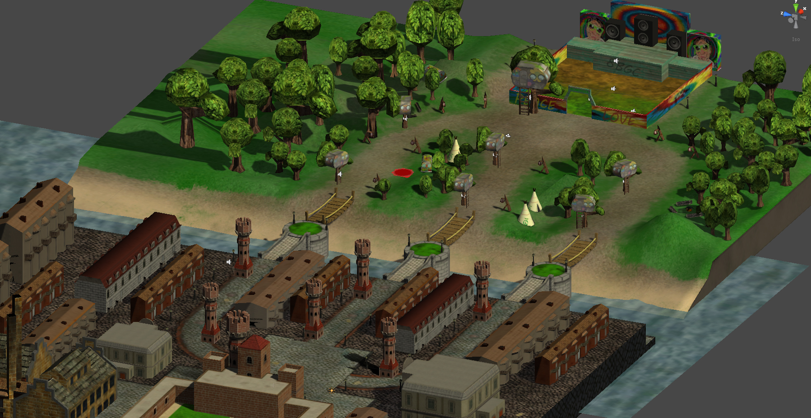

Game Lab
School and others / January 2016
Game lab was a 2 day a week for 2 blocks cross disciplinary project. For 2 blocks students work in teams to create their own game
Gravity Swing
Year 3 In Gravity swing the player controls a space ship exploring the galaxy. The goal is to gain speed by using the gravity of planets. Once the player goes fast enough she can enter the wormhole to the next level. Gravity swing is a casual game for Android and Ios tables. During this project I was the team leader, making sure the team can do their work and the project stays on track. In between managing I work on ship models, cost calculation for publishing the game and research income possibilities.
Gentleman VS Hippies
Year 2 This is a multi-player tower offence game made where a player plays as either the Gentleman’s or as the Hippies fighting for dominance. The player builds factories that spawn units at set intervals on one of 3 lanes which the player can choose. The units follow a simple rock, paper, scissor principle. The goal is to destroy the other player’s towers and main building while protecting his own. This is done by changing the lanes units move on and countering the units send by the opponent.
On this project I was the art leader and worked on character design, modelling rigging and basic level design. Later in the project I switched to programming implementing features and optimizing performance. 
Grow
Year 2 A Gamelab 3 projects for the Ipad using marmalade. The player has control over how the plant grows above and under the ground. Growing the plant costs resources like sun and water. For normal growth only sun is needed but to pass through obstacles the player needs to collect water. On this projected I was a programmer working on the path finding, field rendering. Its created using marmalade SDK and programmed in C++.
Athena’s quest
Year 1 Athena’s quest is a flash based point and click adventure game with a cyber punk based theme. The player controls Athena on her quest to find out the mysteries of Utopia. On her journey the player has to solve different puzzles and mini games and make the right choices during conversations.
For this project I created several mini games and the matching art assets. Later in the projects I switched to animation for the cut scene in the game.